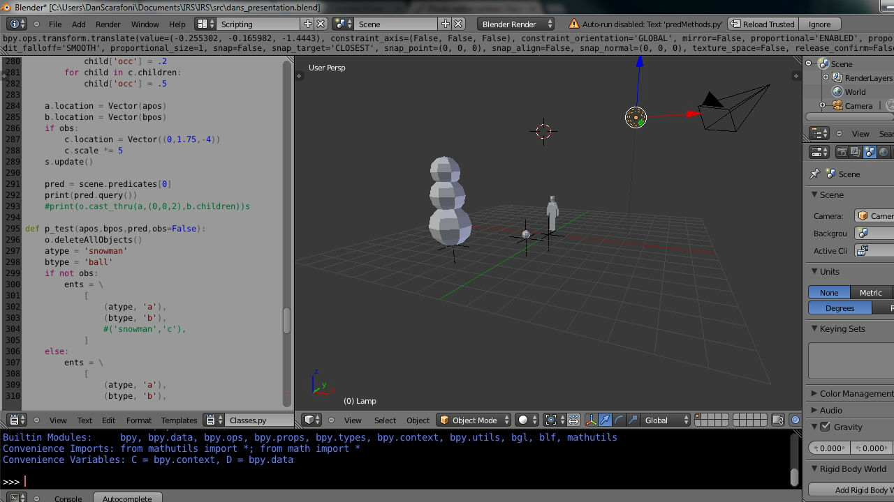
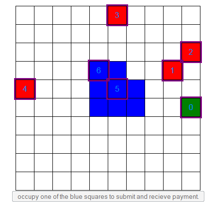
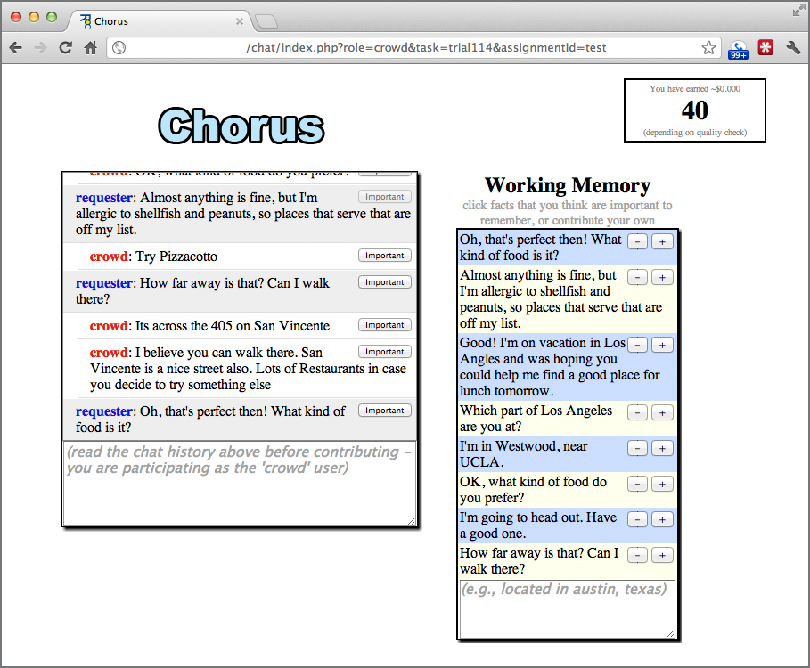
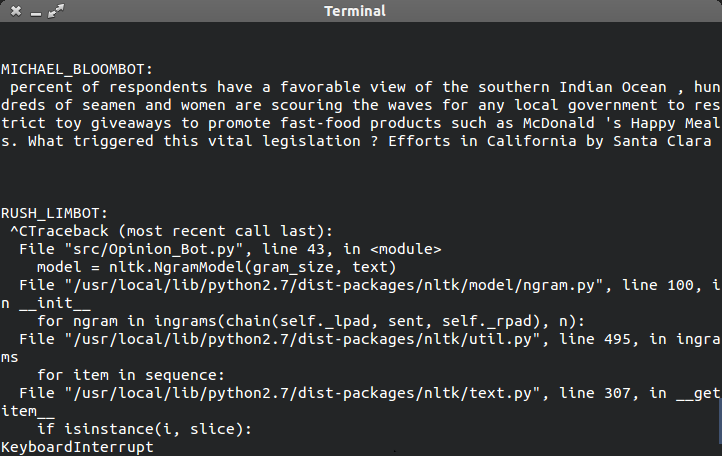

Projects
Imagistic Modeling System

Recent psychological evidence suggests that humans run simulation of 3D objects in their minds as part of the reasoning process. Can we create a program to do the same? The IMS project seeks to answer that question. In cooperation with Eric Bigelow, Alex Wilson, and Dr. Lenhart Schubert, we have developed a 3D reasoning specialist for EPILOG that does just this. This project is written in python, and uses Blender for 3D modeling. A draft of the thesis can be found here.
Shape Tester/Predator vs Prey

Can humans work together to complete a task without communicating? Can AI agents for that matter? Can the two work together? The Predator vs Prey, and its derivative, Shape Tester, attempt to answer this question. In PvP, teams of predators try to catch teams of mice, and in Shape Tester, predator agents try and form a shape to simulate cornering a prey. Experiments are currently researching the efficacy of human, AI, and mixed teams. This project was done in tandem with Carnegie-Mellon's Dr. Jeffrey Bigham, Walter Lasecki, and Mitchell Gordon along with ROCHCI's Legion project. The report can be viewed here.
Chorus Crowd Memory

Once again harnessing the power of the crowd, Chorus uses the reasoning of a group of online volunteers to solve tasks, My particular work has focused on the topic saver, which uses machine learning and natural language processing algorithms to store previously discussed topics for future consideration by the crowd. This project is donw in cooperation with Carnegie-Mellon's Dr. Jeffrey Bigham, Walter Lasecki, and Yongke Yu.
Automated Punditry

On the lighter side of research and development, I teamed up with University of Rochester's hacking club, RocHack, to create this light-hearted, though still intriguing, project. Do online talk shows sound formulaic to you? Do you find yourself playing bingo with the things that pundits say over the radio or on TV? If so, you may need a job. In any case, we aim to show that anyone can be a political pundit, even a hacked-together AI! Enter Opinion_Bot. Using n-gram markov chains and a database of text, it can formulate and spit back opinions it learned from data. Our two existing bots, RUSH_LIMBOT and MICHAEL_BLOOMBOT, are fed copious text from Rush Limbaugh's radio show transcripts and MSNBC opinion articles respectively, and our debate tournament script has them take turns arguing with one another. As they debate, they add each other's rebuttals to their knowledge base, which enables them to gradually argue about the same topic. Just like real pundits, however, they will never change their opinions on these topics! Created for HackNY Spring 2014, this project won "Best Command-Line Interface." The code can be viewed on my github, and the description can be viewed on hackerleague